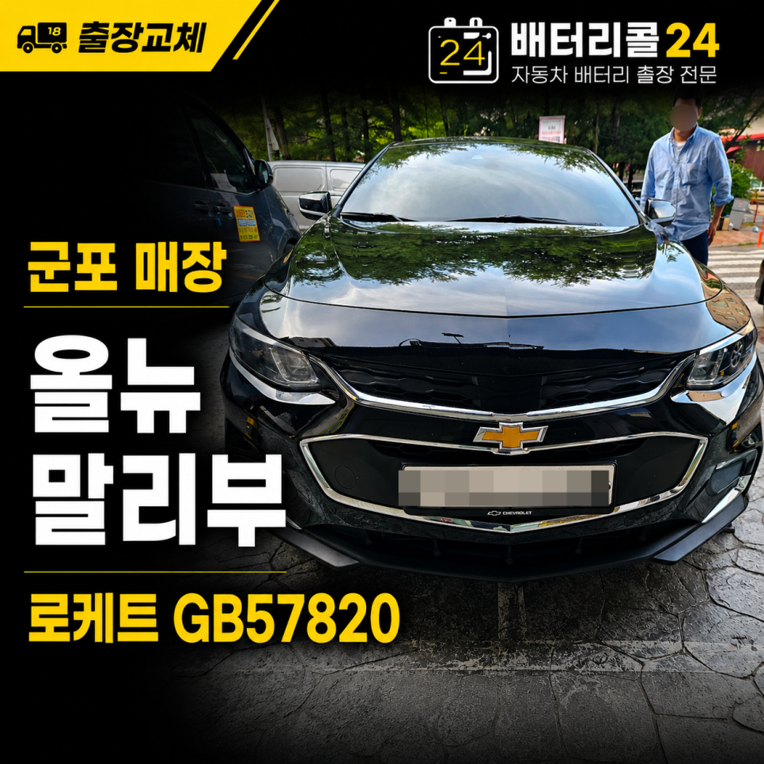

SERVICE 01
신품 배터리 교체
차종과 사용 환경에 맞는 규격을 확인해 장착합니다.
산본·금정·당동·당정·부곡·대야미 등 군포 전 지역으로 출동합니다. 기존 배터리 상태를 확인하고, 교체 후에는 차량 충전전압까지 점검합니다.
직접 촬영한 군포 현장 영상입니다. 국산차·수입차·상용차의 진단, 배터리 교체와 교환등록 과정을 확인할 수 있습니다.
6년 사용한 순정 배터리 상태를 확인하고 AGM105 신품 배터리로 교체한 뒤, 진단기를 이용해 교환등록까지 진행한 실제 군포 작업입니다.



군포는 배터리콜24의 핵심 출동 지역입니다. 주택가, 아파트 지하주차장, 회사, 물류단지, 도로변 등 차량이 있는 현장으로 방문합니다.
정확한 도착 시간은 출발 위치와 교통 상황을 확인해 안내합니다.
차종·연식·현재 위치·시동 상태를 알려주시면 배터리 규격과 출동 가능 시간을 빠르게 확인할 수 있습니다.
단순히 새 배터리를 장착하는 데서 끝나지 않고, 차량이 정상적으로 충전되는지 확인하는 과정까지 포함합니다.
차종과 사용 환경에 맞는 규격을 확인해 장착합니다.

교체 전 상태와 교체 후 차량 충전 상태를 확인합니다.

수입차와 일부 차량의 배터리 교환등록을 지원합니다.

단자 상태를 확인하고 필요한 마무리 작업을 진행합니다.
실제 군포 현장 사진과 자세한 작업 과정은 네이버 블로그 후기에서 확인할 수 있습니다. 카드를 누르면 해당 작업기로 이동합니다.
배터리가 방전됐다고 해서 원인이 항상 배터리 노후화인 것은 아닙니다. 현재 상태를 확인해야 불필요한 교체나 반복 방전을 줄일 수 있습니다.
현장에서 측정한 결과를 바탕으로 현재 상태를 설명하고 필요한 작업을 안내합니다.
전화 전에 궁금해하시는 내용을 먼저 정리했습니다.
산본동, 금정동, 당동, 당정동, 부곡동, 대야미동, 도마교동, 송부동 등 군포 전 지역은 현재 위치와 교통 상황을 확인한 뒤 도착 시간을 안내합니다.
일시적인 방전인지 배터리 성능 저하인지 먼저 확인해야 합니다. 배터리 상태를 측정하고 재사용 가능성 또는 교체 필요성을 설명합니다.
대부분 가능합니다. 차량 위치와 주차장 진입 조건을 알려주시면 필요한 장비와 배터리를 준비해 방문합니다.
BMW, 벤츠, 아우디, 미니 등 일부 차량은 교환등록이 필요할 수 있습니다. 차종과 연식을 알려주시면 규격과 등록 가능 여부를 확인합니다.
배터리콜24는 24시간 상담을 운영합니다. 다만 현장 위치와 작업 상황에 따라 실제 도착 시간은 달라질 수 있습니다.
차종, 연식, 현재 위치, 시동 상태를 알려주시면 배터리 규격과 출동 가능 시간을 확인해 안내합니다.
배터리콜24는 군포 산본동, 금정동, 당동, 당정동, 부곡동, 대야미동, 도마교동, 송부동을 포함한 군포 전 지역에서 자동차 배터리 출장 교체 상담을 진행합니다. 시동 불량이나 반복 방전이 발생했을 때 기존 배터리 상태를 먼저 진단하고, 교체가 필요한 경우 차량 규격에 맞는 신품 배터리를 장착합니다.
일반 승용차와 SUV, 국산차, 수입차, AGM 배터리 적용 차량, 전기차 12V 보조배터리, 화물차까지 차종과 현장 상황에 맞춰 상담합니다. 배터리 교체 후에는 차량 충전전압을 확인하고, 필요한 수입차는 진단기를 이용한 배터리 교환등록을 지원합니다.
배터리콜24는 네이버 플레이스에서 ‘군포의왕안양24시간 자동차 배터리 출장 밧데리’ 상호로도 확인하실 수 있습니다.